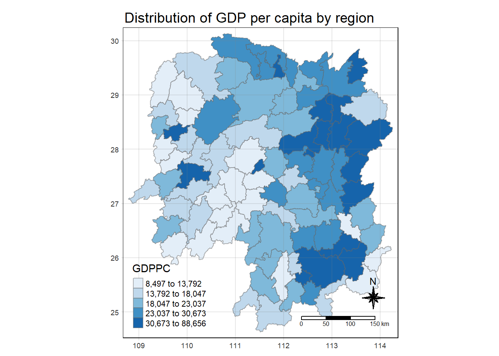

Show the code
pacman::p_load(sf, tmap, sfdep, tidyverse)February 19, 2024
For this in-class exercise, we will be using the following packages and loading it into our R environment:
For the purpose of our analysis, we will be using the following datasets:
First, I will be importing Hunan.
Reading layer `Hunan' from data source
`D:\KrisLBT\IS415-GAA\In-class_Ex\In-class_Ex05\data\geospatial'
using driver `ESRI Shapefile'
Simple feature collection with 88 features and 7 fields
Geometry type: POLYGON
Dimension: XY
Bounding box: xmin: 108.7831 ymin: 24.6342 xmax: 114.2544 ymax: 30.12812
Geodetic CRS: WGS 84Check if the bounding box is in decimal deree or not. If it’s in decimal degree, it is in geodetic CRS, not projected CRS.
Now, I will be importing Hunan_2012.csv into my R environment
Check if anything can be used to join the data frames (geospatial and aspatial). This can be County name etc.
Also, perform left_join to prevent losing the geometric data
tmap_mode("plot")
tm_shape(hunan_GDPPC) +
tm_fill(col="GDPPC",
style = "quantile",
palette= "Blues",
title = "GDPPC") +
tm_layout(main.title = "Distribution of GDP per capita by region",
main.title.position = "center",
main.title.size = 1.2,
legend.height = 0.45,
legend.width = 0.35,
frame= TRUE) +
tm_borders(alpha=0.5) +
tm_compass(type="8star", size=2) +
tm_scale_bar() +
tm_grid(alpha=0.2)
You can go directly into the Queen’s Method using tidyverse in a singular step:
.before = 1 means to ensure one column will always be the first May not be necessary in real life applications
List of 2
$ I: num 0.301
$ K: num 7.64However, Global Moran I might not be convincing enough
Can do it on multiple simulations (in this case 100. This is because the number of simulations is nsim+1) to confirm the representativeness of the data set.
Monte-Carlo simulation of Moran I
data: x
weights: listw
number of simulations + 1: 100
statistic = 0.30075, observed rank = 100, p-value < 2.2e-16
alternative hypothesis: two.sidedThe statistical report above demonstrates that the p-value is smaller than 0.05, which means that this result is significant at a 95% significance level. Hence, we can reject the null hypothesis that the spatial distribution of GDP per capita resembles random distribution. Because the Moran’s I value is greater than 0, we can infer that the spatial distribution shows signs of clustering.
nsim will effect computation time. If you’re on a larger data set, you can just do a smaller number (e.g. 99, 49). 999 may take an incredibly long time to load. Test if your compute can handle it within a certain timeframe.
We can also only infer from the results, we can’t definitively prove/disprove our hypothesis
Complete in-class exercise 5 on our own + watch video for hot and cold spot